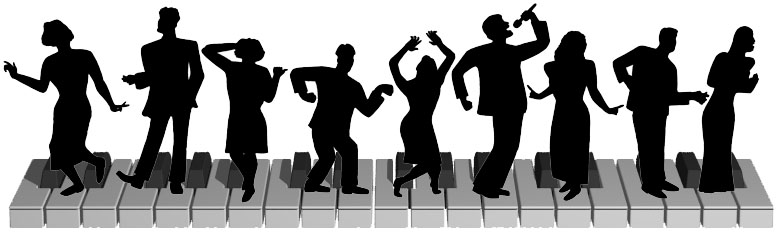

Jazz Piano (1996)
This image was the program and poster art for the fall 1996 Cal Jazz Choir concert. It holds a special place in my heart as a memory of my first time singing with an a cappella group and also my first ray-traced image. It was the first of four images I would draw of the Jazz Choir all of which are very dear to me, because of how much I loved them all and cherished the chance to sing with them. The members that inspired each silhouette are (with recent name changes in parentheses, when I could find them) from left to right: Michelle Bloom (Goetzl), Wynn Wilcox, Sara Ferejohn (LaBatt), Toby Jaw, Sarah Aldinger, me, Susan Garcia (Martin), Prakash Bhave, and Corbi Wright.
The piano was created using constructive-solid geometry (CSG) with the Persistence of Vision ray-tracer (a.k.a. POV-Ray), which seems amusing and quaint in retrospect, since quad-meshes dominate 3D graphics these days. In contrast, this piano keyboard was created with hundreds of little cylinders, spheres, and trapezoids, all drawn on graph-paper and painstakingly entered into POV-Ray source code, one coordinate at a time. Even more amusing is the fact that I never thought to render a version that was more than 780 pixels wide. Because hey, who would ever possibly need more pixels than that in a computer graphics image, right? My, how times have changed.
© W. Rhett Davis 1996